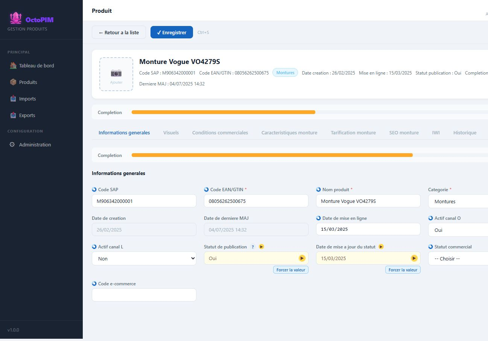

Definition d’un produit
Le produit est l’objet central du PIM : une reference commercialisable (monture, lentille, accessoire, PEL…) avec ses valeurs, ses visuels et son historique.
Qu’est-ce qu’un produit ?
Un produit est une fiche rattachee a une categorie. La categorie decide quels groupes d’attributs (onglets) s’affichent. Les valeurs saisies appartiennent au produit ; les attributs n’en sont que le contrat (voir Gestion des attributs).

A quoi sert un produit ?
- Porter la verite metier d’une reference (nom, codes, caracteristiques, tarifs, SEO, visuels).
- Alimenter les canaux (Optic 2000 / Lissac) via les indicateurs d’activation.
- Servir de source unique pour l’export, Snowflake, la caisse et les autres outils.
- Tracer qui a change quoi (historique a l’enregistrement).
Ce que porte une fiche
| Famille d’information | Exemples | Commentaire |
|---|---|---|
| Identite | Categorie, nom, code EAN/GTIN, code SAP, dates de creation / mise a jour | Le code SAP n’est pas obligatoire a la creation. L’EAN, le nom et la categorie le sont. |
| Publication | Actif canal O, actif canal L, statut de publication, date de mise en ligne | Le statut de publication se deduit des canaux (calcule). Un canal En attente ne compte pas comme actif. |
| Qualite | Taux de completion | Champs saisissables des groupes visibles pour la population du role. Un meme champ dans deux onglets ne compte qu’une fois. La fiche detaille aussi le taux de chaque groupe. |
| Valeurs metier | Caracteristiques, tarifs, SEO, conditions commerciales, visuels | Selon les onglets de la categorie. |
| Historique | Ancienne / nouvelle valeur, utilisateur, horodatage | Flush a l’enregistrement, pas a chaque frappe. |
Comment on le reconnait
A l’import et a la recherche de doublon, le produit est identifie d’abord par le code EAN/GTIN, sinon par le code SAP. Ce n’est pas un identifiant technique cache : c’est la cle metier d’echange avec SAP et les fichiers Excel.
La fiche
Ouvrir un produit affiche une fiche : identite en tete, puis un onglet par groupe rattache a sa categorie. Il n’y a pas d’onglet Synthese. Les champs courts se rangent cote a cote. Un texte long ou une image prend toute la largeur. Retour a la liste et Enregistrer restent visibles au defilement.
Saisie et completion
- A la creation, EAN, nom et categorie sont obligatoires. SAP est facultatif.
- Le taux de completion ne compte qu’un champ saisissable, une seule fois, et seulement dans les groupes de la population du role. Un role sans population voit tous les groupes. Hors taux : systeme, calcules, visuels, commentaire, champ masque par une condition. Le picto de completion s’affiche sur tous les types concernes, y compris une image. Sans picto, le champ est optionnel : pas de pastille « Optionnel ». Un champ de completion encore vide a un fond rose pale. Ce n’est pas une erreur de saisie.
- Chaque onglet a sa barre, au meme dessin que la barre du produit, mise a jour a la saisie. Le champ Completion n’est pas saisi : il n’apparait pas dans l’onglet.
- Enregistrer refuse la fiche si un obligatoire visible est vide. Il ecrit alors la date de mise a jour et l’historique. Quitter avec des changements non enregistres demande confirmation. L’historique n’est ecrit qu’a l’enregistrement.
- Un nombre s’affiche avec 0, 1 ou 2 decimales selon l’attribut. Par defaut, 0. Les prix et les PA ont 2 decimales, sauf le PVMC et le PV TTC arrondi accessoire (0). Un pourcentage s’affiche en % et se stocke entre 0 et 1.
- Un champ jaune est calcule. On peut forcer une valeur, puis revenir au calcul. Une formule ne change pas selon la categorie : si la regle differe, c’est un autre champ. Le detail des prix est sur Attributs et Categories.
Canaux, conditions, alertes
- Actif canal O et actif canal L valent Oui, Non ou En attente. Le statut de publication se deduit : il est publie si au moins un canal est Oui. En attente ne publie pas. La date de mise a jour du statut ne bouge que si le statut change.
- Reassort automatique SAP passe a A desactiver quand les deux canaux sont Non. Un canal vide n’est pas Non. En attente n’est pas Non. Sinon la valeur saisie reste. La liste est verrouillee seulement tant que les deux canaux sont Non.
- La remise interne, le RF et la RFA viennent de l’accord marque × fournisseur, sans ressaisie. La remise interne compte comme renseignee. Le panneau affiche aussi le code fournisseur et le trigramme.
- Une alerte declenchee s’affiche sous le titre et sur le champ concerne.
On reconnait un produit a l’import d’abord par l’EAN, sinon par le SAP. L’unicite de l’EAN n’est pas tranchee.
RG-PRD-02 — A la creation, EAN, nom et categorie sont obligatoires. SAP est facultatif.
RG-PRD-03 — L’historique n’est enregistre que lorsque l’utilisateur clique sur Enregistrer.
RG-PRD-04 — Le taux de completion ne compte qu’un champ saisissable, une seule fois, et seulement dans les groupes de la population du role (un role sans population voit tous les groupes). Hors taux : champs systeme, champs calcules, visuels, commentaire, champ masque par une condition. Chaque onglet affiche sa barre de completion, au meme format que la barre du produit, et elle se met a jour a la saisie. Le picto de completion s’affiche sur tous les types de champ concernes, y compris une image. Sans ce picto, le champ est optionnel : on n’affiche pas une pastille « Optionnel ».
RG-PRD-05 — Un nombre s’affiche avec 0, 1 ou 2 decimales selon l’attribut. Par defaut il est arrondi. Les prix et les PA (sauf le prix final arrondi) s’affichent avec 2 decimales.
RG-PRD-06 — Pas d’onglet Synthese sur la fiche. Les champs courts sont en colonnes, le texte long et les images en pleine largeur. « Retour a la liste » et « Enregistrer » restent visibles au defilement. Le titre de page suit l’ecran ouvert.
RG-PRD-07 — Enregistrer refuse la fiche si un champ obligatoire visible est vide, et ecrit alors la date de mise a jour et l’historique. Quitter avec des changements non enregistres demande confirmation.
RG-PRD-08 — Le champ Completion n’est pas un champ a remplir : il n’apparait pas dans l’onglet. La barre globale et la barre de chaque groupe suffisent.
RG-PRD-09 — La remise interne, le RF et la RFA repris de l’accord marque sont reportes sur la fiche, sans ressaisie. La remise interne compte comme renseignee.
RG-PRD-10 — Le statut de publication se deduit des canaux actif O et actif L. Sa date ne bouge que si ce statut change.
RG-PRD-11 — Un champ qui compte dans la completion et qui est vide a un fond rose pale. Ce n’est pas une erreur de saisie.
RG-PRD-12 — Le panneau Conditions commerciales de la fiche affiche le code fournisseur et le trigramme du fournisseur lie, en plus du bareme.
RG-PRD-13 — Une alerte declenchee sur la fiche s’affiche sous le titre et sur le champ concerne.